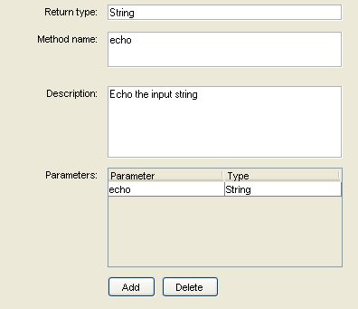
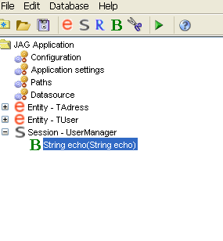

Creating business methods
JAG can be used to model business methods as well. They can be added to Services. In the business methods you
can model the business interfaces for which JAG will generate stub implementations.
The Business methods can be exposed as WebServices as well.
Modeling business methods is actually quite simple:
To add a business method to a Service, first select Edit > Add > business method from the menu or click the
business method button on the toolbar.
Configuring a business method

The business method you initially create is blank - it has no method name, and contains no parameters.
The business method can be configured through the configuration screen, shown above.
Here is a description of the various input fields:
- Return type: the fully qualified name of the return type of the method.
- Method name: the name of the business method.
- Description: an optional natural-language description for this business method.
- Parameters: the input parameters for the business method.

The resulting business method is shown above. In this case a simple echo method has been created,
with one input parameter and a java.lang.String return type.
<<Start page